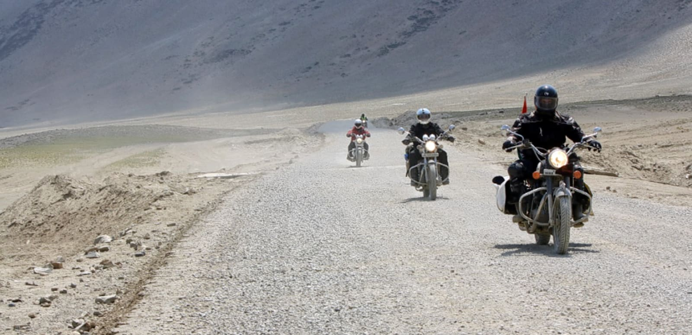
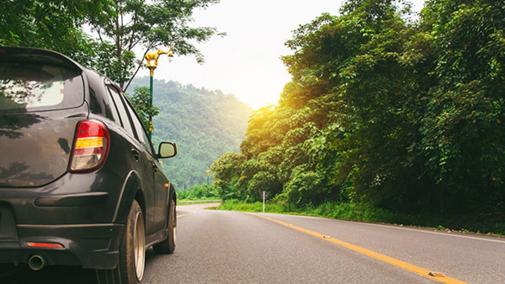

Road trips are perhaps the best way to satiate one’s craving for adventure and escape monotony and to explore and discover the life across different places.
The best kind of break that one can get from the all stress and drama around is to be simply able to pack up your bags, start up your engines and go on for a road trip with your friends. India is a massive country both in terms of size and culture and through its annals lays several great venues that seduce the wanderlust souls with the promise of adventure and fun.
This lockdown period has been really tough for them but then hard time always passes by and this shall too till then enjoy our bucket list of eight best road trips in India for all the road trip lovers out there that we recommened them to take in order to get a break from monotony.
Manali to Leh:
The beauty of the road trip in India from Manali to Leh cannot be captured in words. A road trip in the Himalayas is always accompanied by gorgeous landscapes. The Manali-Leh road trip is an absolutely enthralling journey to take. Riding through the stunning snow-clad hills and mountains, challenging terrains and through some of the high altitude passes may get a little treacherous and tricky on your way to Leh but the awesome scenic beauty makes up for it. Manali to Leh bike trip is amazing letting you discover the hidden treasure of Manali Ladakh route and for this very fact it becomes an absolutely necessity for every daring traveler.
Duration of the trip: It takes around 2 days for this journey
Distance to cover: 479 km
Mumbai to Goa:
This road trip can in all terms be called the Father of Indian road trips. This road trip is all about the confluence of a myriad of cultures and traditions.
It’s a drive towards the sun, the sea and the sand on a gorgeous road and it will inspire and gear you up for the upcoming fun.
It is preferred you take the Pune-Kolhapur Route as it is safer, smoother and is as silky as creamed butter spread on the earth that just lures your car towards worry-free travels. But that doesn’t mean it offers nothing to adventurous lot, for they should take the Chiplun-Ratnagiri Route while traveling with friends on a bike seeking scenic beauty of the Western Ghats.
Duration of the trip: The journey takes around 11 hours via the Pune-Kolhapur Route & around 12 hours via the Chiplun-Ratnagiri Konkan route.
Distance to cover: 590 km via the Pune-Kolhapur Route & 577 km via the Chiplun-Ratnagiri Konkan route.
Jaipur to Ranthambore:
To witness how royalty gets mixed with the alluring beauty of wilderness this is the trip one takes. This trip is rightly called a trip form royal land to royal beast. This is normally done by open jeeps and it is amongst the most popular road-trips in Rajasthan. The trip accompanies beautiful views of the mustard fields and picturesque villages like Balsi & Lalsot. Ranthambore National Park is also a huge attraction in this trip. This 3 hour trip surely proves to be an afternoon well spent.
Duration of the trip: This journey is a relatively shorter one of about 3 hours 14 minutes
Distance to cover: 158 km
Guwahati to Tawang:
This trip leads you to one of the most stunning monasteries in India.
These start and the end are must visit spots when you are in the Northeast. Though the drive is long and challenging but it is totally worth it. Spread across an extremely beautiful terrain of mountain roads, the 520 km journey makes it worth the time and effort. The road trip offers breath-taking views of snow-clad mountains and lets you witness the marvels of the Buddhist culture in the North-East. The best time to take this road trip is between March and October as the rest of the time the roads may be blocked due to snowfall.
Duration of the trip: It takes around 14 hours 27 minutes
Distance to cover: 566 km

Ahmedabad to Kutch:
A short weekend holiday may land you up in the middle of nowhere. Don’t be confused this trip leads you to a stretch of white horizon also known as Great Rann of Kutch. The beautiful white landscapes, the barren desert stretched for miles and the colourful contrasts of the local population over it definitely makes one’s road trip worthwhile.
Note: Try to come at a time when you can witness the beauty of the full moon at Kutch.
Duration of the trip: It takes around 7 hours 32 minutes
Distance to cover: 454 km
Delhi to Agra to Jaipur:
This trip offers prismatic views of India’s bygone history and confluence of many different traditions and cultures. The famous Golden Triangle road makes up for one of the best road trips in India but it’s not just the road, but the three culturally and historically rich cities that offer a great experience for travellers, including the Taj Mahal at Agra and the numerous monuments at Jaipur.
Duration of the trip: It takes around 6 hours 58 minutes
Distance to cover: 449 km
Chennai to Pondicherry:
It is also known as the East Coast road. This is a unique stretch that is accompanied by the sea alongside the long winding road. The Sea on one side of the road is a sight to behold as the day grows and the changing reflections of the Sun on the water as the day advances makes it one of the most beautiful road around Chennai. Always keep your camera handy as the changing height of the sun and its reflections on the sea will make it a must to click photos to immortalize the beautiful memories.
Duration of the trip: Takes one around 3 hours 31 minutes
Distance to cover: 158 km
Bangalore to Munnar:
Your reflexes will feel alive because of the hilly terrains, the passes through the lush tea-gardens and the scenic landscapes. The route is a sea of windmills & gorgeous waterfalls with lining of coconut trees on each side. The surrounding landscapes are dotted with a number of forest patches, streams, tea gardens, & wooden bridges which makes the entire journey magical.
Duration of the trip: Takes one about 9 hours
Distance to cover: 477 km
Wanna reach out to us?